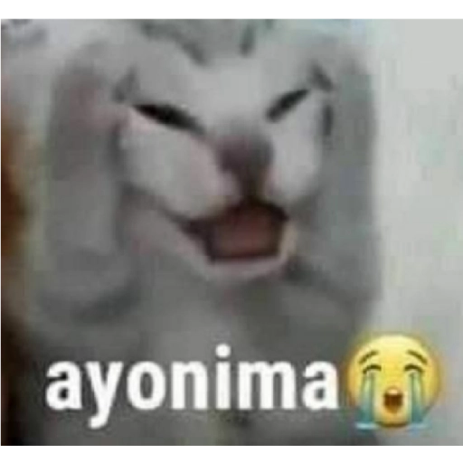

Prakarya IXD
Explore
A. Pengertian
Kerajinan Bahan Keras adalah produk kerajinan yang menggunakan bahan dasar yang bersifat keras, solid, kuat, padat, dan tidak mudah untuk diubah bentuknya.
Produk kerajinan dari bahan keras dapat dibuat dari bahan alam dan bahan buatan. Keragaman jenis bahan kerajinan bahan keras dapat kita lihat dari berbagai produk-produk yang tersebar
di berbagai daerah perkotaan dan pelosok desa.
Contohnya, kerajinan dari bahan keras kayu, bambu, rotan, kaleng, kaca, dan sebagainya. Pasar lokal maupun impor telah mendominasi
penggunaan bahan keras tersebut sebagai bahan kerajinan.
B. Prinsip kerajinan bahan keras
1. Keunikan Kerajinan bahan keras
Dalam kerajinan bahan keras terdapat beragam keunikan tersendiri tergantung pada bahan yang digunakan, hal ini menyebabkan adanya beragam teknik teknik yang digunakan untuk membuat kerajinan bahan keras. contohnya seperti kayu, pada bahan kayu mempunyai keunikannya tersendiri yaitu terdapat pada serat/teksturnya yg tidak dapat ditemui pada bahan yang lainnya.
2. Keragaman muatan nilai dalam produk kerajinan
sebelum membuat produk/ suatu kerajinan pastinya berawal dari berbagai bentuk ide maupun gagasan dari manusia yg berasal dari suatu pikiran yanng kehendak melalui suatu tindak, cipta, dan karsa. Pesan tersebut dapat diperoleh berdasarkan proses berkarya yang dapat dibagi menjadi berbagai hal sebagai berikut
a. Produk dengan nilai fungsional
b. Produk dengan nilai informatif
c. Produk dengan nilai simbolik
d. Produk dengan nilai prestise
3. Aspek Rancangan dalam Produk Kerajinan
Dalam pembuatan sebuah produk kerajinan pastinya tidak lepas dari salah satu unsur penting yaitu cara melakukan/ mempertimbangkan dalam pembuatan seuatu rancangan sehingga dapat menggunakan berbagai aspek teknologi dan unsur budaya. Dalam pembuatan sebuah produk kerajinan pastinya tidak lepas dari salah satu unsur penting yaitu cara melakukan/ mempertimbangkan dalam pembuatan seuatu rancangan sehingga dapat menggunakan berbagai aspek teknologi dan unsur budaya.
A. Faktor Teknis, Meliputi
ㅤㅤ1.Metode produksi yang andal
ㅤㅤ2.Tingkat kemahiran seumber daya manusia
ㅤㅤ3. Penerapan daya mesin atau manual
B. Faktor Ekonomis, Meliputi
ㅤㅤ1. Selera masyarakat terhadap produk
ㅤㅤ2. Nilai jual dan keberadaan suku cadang
ㅤㅤ3. Kebijakan penciptaan
ㅤㅤ4. Pemasaran yang tahan persaingan
ㅤㅤ5. Sistem pemasokan atau distribusi
C. Faktor Ekonomis, Meliputi
ㅤㅤ1. Kenyamanan
ㅤㅤ2. Keamanan
ㅤㅤ3. Kesesuaian
ㅤㅤ4. kepraktisan
D. Faktor Sains Dan Teknologi, Meliputi
ㅤㅤ1. Terdapat unsur kebaruan atau temuan baru
ㅤㅤ2. mengikuti perkembangan pengetahuan
ㅤㅤ3. selalu mengikuti perkembangan teknologi
E. Faktor estetika, meliputi
1. Menampilkan bentuk dan keindahan
ㅤ2.Memiliki daya pikat
ㅤㅤ3. Terjadi keserasian
ㅤㅤ4. Kesan atau gugahan yang ditampilkan
F. Faktor Kondisi Lingkungan, Meliputi
ㅤㅤ1. nilai budaya
ㅤㅤ2. kondisi lingkungan atau wilayah setempat
Sekian Informasi Yang Kami Berikan Semoga Informasi Yang Kami Berikan Berguna Untuk Kalian:>
